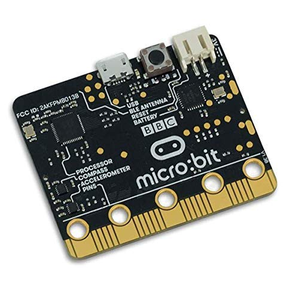

In terms of hardware, the Micro:bit has a 5x5 led matrix, 2 user buttons, an edge connector, a micro USB, an antenna, a reset switch, a battery connector, a Nordic nRF5 1822 processor, a NXP KL26Z USB interface chip, a compass and an accelerometer. With all of this hardware, it can perform a variety of functions.
